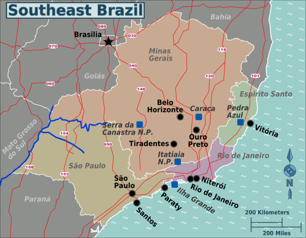

Southeast
The Southeast Region of Brazil is composed of the states of Espírito Santo, Minas Gerais, Rio de Janeiro and São Paulo. It is the richest region of the country, responsible for approximately 60% of the Brazilian GDP, as São Paulo, Rio de Janeiro, and Minas Gerais are the three richest states of Brazil, the top three Brazilian states in terms of GDP. The Southeast of Brazil also has the highest GDP per capita among all Brazilian regions. The Southeast region leads the country in population, urban population, population density, vehicles, industries, universities, airports, ports, highways, hospitals, schools, houses and many other areas.
- Area: 927,286 km² (10.85%);
- Population: 80,303,750 (77.96 people/km², 38%);
- GDP: R$1,629 trillion / US$803 billion (2008; ~49%);
- Climate: Tropical in the northwest (warm, relatively dry in the winter and wet in the summer); Semi-arid in the north; temperate in the south;
- States: Espírito Santo, Minas Gerais, Rio de Janeiro, São Paulo;
- Largest Cities: São Paulo (11,037,593); Rio de Janeiro (6,186,710); Belo Horizonte (2,452,617); Guarulhos (1,299,283); Campinas (1,064,669); São Gonçalo (991,382); Duque de Caxias (872,762); Nova Iguaçu (865,089); São Bernardo do Campo (810,979); Osasco (718,646); Santo André (673,396); Uberlândia (634,345); Contagem (625,393); São José dos Campos (615,871); Sorocaba (584,313); Ribeirão Preto (563,107); Juiz de Fora (526,706); Belford Roxo (501,544); Niterói (479,384); São João de Meriti (469,827); Betim (441,748); Campos dos Goytacazes (434,008);
- Economy: Manufacturing (machinery, electronics, automobiles and aviation), coffee, sugar cane, tourism, petroleum, textiles, energy production (not sufficient, however, to fulfill its demand.) The Southeast is the economic center of Brazil, and most large companies present in Brazil have their headquarters in this region. The economic success of this region is a combination of its 4 states. São Paulo state is the most developed in the country, it has a population density as high as western Europe, and a HDI comparable to eastern Europe. Rio de Janeiro is the leader in petroleum production (with almost 3/4 of national production). Minas Gerais and Espírito Santo are placed in the richest mining region in Brazil;
- Transport: The region is heavily covered by highways, and, to some extent, railways. Railways and rivers are used mainly for freight, and used where they are present. The region also contains several airport hubs which provide many domestic and international air routes;
- Vegetation:Mainly tropical-like semi-deciduous forests (Mata Atlântica); semi-arid in the north, with almost no vegetation; savannah-like vegetation in the west and in the northwest (Cerrado). Very little of the native vegetation still remains (~2%, mostly in parks);
- Notable characteristics: The southeast region is the major powerhouse of the Brazilian economy, responsible for 49% of the Brazilian GDP (approximately US$1024 billion in 2010). It is also the most populous region in the country, with more than 80 million people, and contains the three most important metropolitan regions (São Paulo, Rio de Janeiro and Belo Horizonte), as well as many other large cities (such as Vitória (the capital of Espirito Santo state), Campinas, Uberlândia and several others).